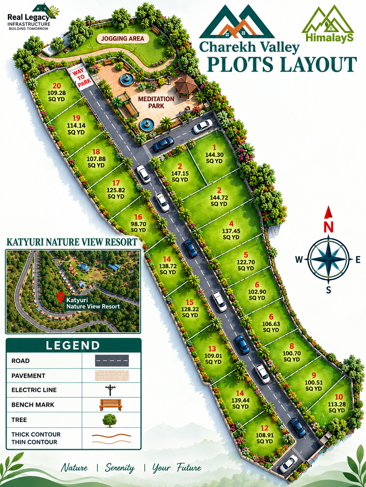

For urban families exhausted by concrete jungles, traffic congestion, and polluted air, owning a second home in Uttarakhand has evolved from a distant dream into an essential lifestyle priority. Nestled in the lap of the Himalayas, the mountain state offers pristine pine forests, tranquil valleys, and a refreshing climate that rejuvenates mind and body.
The Rise of Second Homes in the Mountains
The post-pandemic shift toward remote work and flexible living has permanently altered how we view housing. Families no longer want to be confined to congested urban apartments. Owning a getaway cabin or holiday chalet in Uttarakhand provides an instant sanctuary where weekends transform into true retreats.
Proximity to Delhi-NCR via upgraded expressways makes hill destinations in Uttarakhand far more accessible than remote Himalayan regions in other states, allowing for spontaneous weekend drives.

Breathtaking misty mornings and pine forests define second home living in Uttarakhand.
Key Lifestyle & Health Benefits
Relocating to or vacationing in your own mountain home offers profound physical and mental wellness advantages:
- Respiratory Wellness: Breathing clean unpolluted mountain oxygen free from urban particulate matter.
- Mental Peace: Constant exposure to natural greenery, bird songs, and starry night skies lowers stress and cortisol levels.
- Active Outdoor Living: Proximity to hiking trails, nature walks, and wildlife sanctuaries encourages an active lifestyle.
- Quality Family Time: A dedicated holiday home creates a central gathering place for family vacations away from digital distractions.
Buying a Plot vs. Ready-Built Villa
When investing in a mountain retreat, buyers often debate whether to purchase a ready-made villa or a plot of land to construct custom spaces. Here is why buying a plot is often superior:
Architectural Freedom
Design your wooden chalet or stone cottage exactly to your taste, room count, and aesthetic preferences.
Cost-Effective Entry
Plots require a lower initial capital outlay than pre-constructed luxury villas, allowing you to build at your own pace.
Higher Land Appreciation
Land value in prime hill corridors appreciates faster than depreciating building structures.
Why Charekh Valley is the Ideal Destination
Located in the Uttarakhand hills at an altitude of 6,100 feet right beside the established Katyuri Resort, **Charekh Valley** solves the common challenges of hill property ownership. Instead of buying isolated land with zero upkeep, Charekh Valley provides gated security, internal all-weather roads, underground utilities, and resort hospitality privileges right at your doorstep.



Generating Passive Income Through Resort Leasing
A second home doesn't have to sit vacant when you are back in the city. Plotted communities integrated with operating resorts allow owners to participate in professional rental lease-back programs. When you are not using your chalet, resort management can rent it out to luxury travelers, turning your holiday home into a revenue-generating asset.
Build Your Dream Mountain Retreat
Explore available plots and request the exclusive price catalog today.
Enquire With ConciergeChecklist for Buying Hill Real Estate
Before finalizing any second home or land purchase in the mountains, keep these practical tips in mind:
- Verify Clear Titles: Ensure land titles, freeholds, and registry documents are verified by legal counsel.
- Check All-Weather Access: Confirm that paved roads connect directly to the property so travel remains smooth during monsoons or winter.
- Assess Infrastructure Support: Look for projects that offer reliable water lines, electricity, and perimeter security.
- Plan Your Maintenance: Consider how the property will be maintained, cleaned, and guarded when you are away in the city.
Related Guides & Resources
Frequently Asked Questions
Why is Uttarakhand ideal for a second home?
Uttarakhand offers unpolluted mountain air, majestic pine forests, cooler weather, and closer proximity to Delhi-NCR compared to southern or western hill stations.
What are the benefits of buying a plot for a second home?
Buying a plot gives you total architectural freedom to design your dream cottage, lower initial capital outlay than a ready-built villa, and higher land appreciation over time.
Can I rent out my second home in the hills?
Yes, projects integrated with resort management frameworks—such as Charekh Valley beside Katyuri Resort—allow owners to lease their villas or chalets for passive holiday rental income.
Ready to Own Your Mountain Sanctuary?
Contact our property advisors to plan a private site visit.
Plan Site Visit